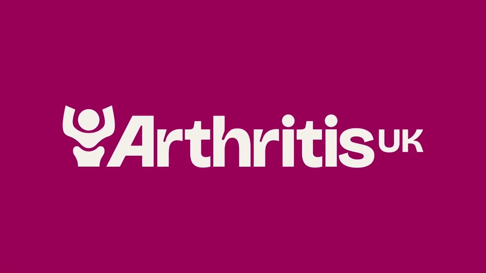

NHS Lupus Information
Provides reliable, evidence-based information on lupus symptoms, diagnosis, treatment options, and living well with the condition within the UK healthcare system.

Lupus UK
A national charity offering patient support, peer networks, educational resources, and advocacy for people living with lupus and their families.

Versus Arthritis (Arthritis UK)
Offers practical guidance on managing autoimmune and inflammatory conditions, including lupus, with information on treatments, self-management, and support services.

Lupus Europe
Represents national lupus organisations across Europe, promoting patient advocacy, research collaboration, and shared educational resources.
Lupus GPT
A conversational AI tool designed to provide accessible lupus information, help patients understand medical terminology, and support informed discussions with their healthcare team.